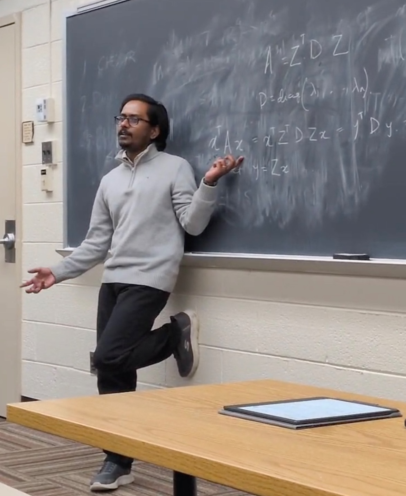

Instructor · Virginia Tech
-
Math Camp
Math Camp notes -
Microeconomic Theory
-
Principles of Economics (Microeconomics)
I teach this course using Marginal Falls Economic Quests, a collection of interactive games I co-developed to help students learn economics through decision-making.
Course website
Teaching Fellow · Ashoka University
Strategic Decisions & Game Theory
Teaching Assistant · Virginia Tech
Graduate courses
- Mathematical Economics ECON 5124
- Prices and Markets I ECON 5005
Undergraduate courses
- Theory of Games and Economic Behavior ECON 4424
- Microeconomic Theory ECON 3104
- Principles of Economics ECON 2005
